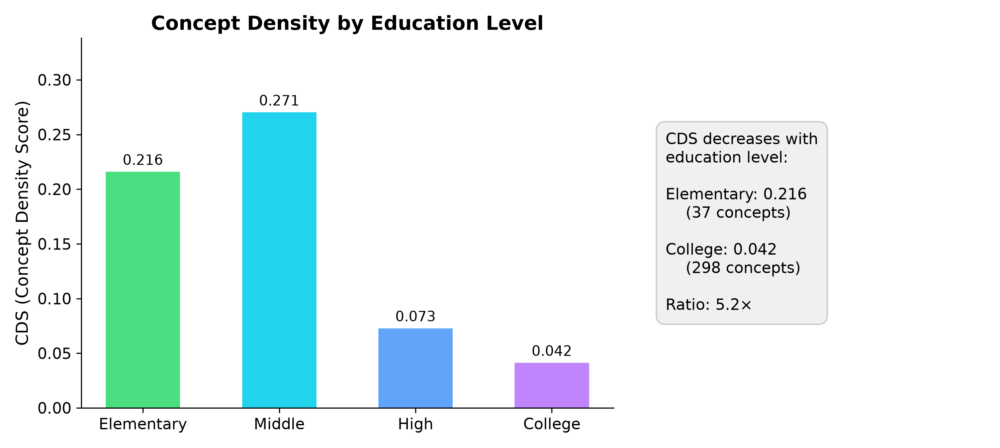
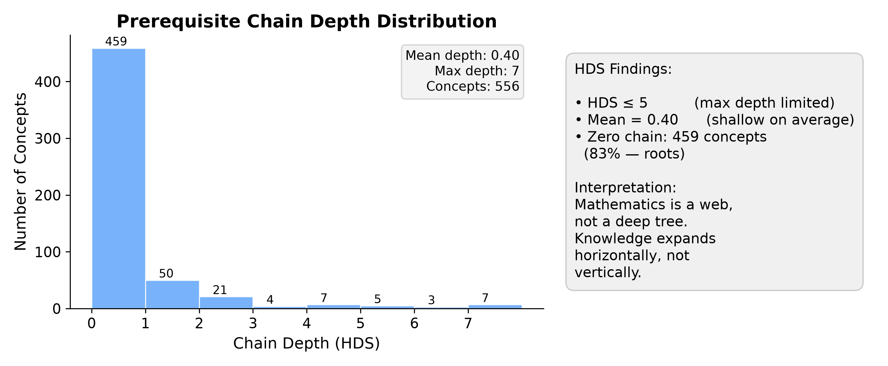
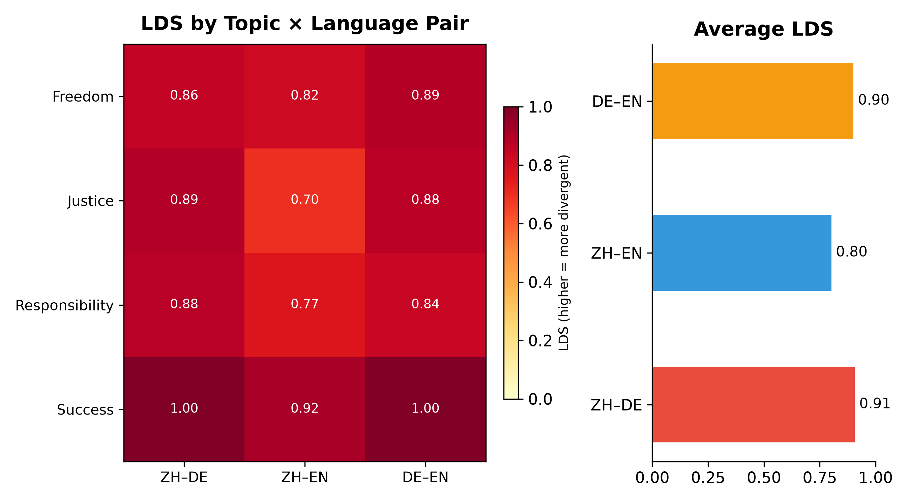

A cross-lingual analysis of mathematics, physics and chemistry textbook knowledge — across China, Germany, the United Kingdom and the United States — measured through structural graph metrics and curriculum alignment.
Three complementary lenses on how the same knowledge is organized differently
How do different languages organize the same knowledge?
Chinese and German textbooks show the highest structural divergence (LDS=0.907); Chinese and English the lowest (0.802). Curriculum tradition — not language family — drives these differences.
How do different STEM subjects organize knowledge?
All three disciplines follow an early-peak-later-decline pattern. Knowledge density peaks at middle or elementary school, then drops sharply. Maximum prerequisite depth is bounded at 8.
How do different curricula organize the same subject?
Coverage scores range from 8% (China) to 82% (UK). These differences reflect educational philosophy — exam-driven breadth versus specialized depth — not alignment quality.
What this project delivers to the field
1,160+ concepts and 4,100+ relations across mathematics, physics and chemistry in Chinese, English and German — extracted from 180+ textbooks and validated against 92 gold-standard annotations (F1 = 0.939).
CDS (concept density), HDS (hierarchy depth) and LDS (language drift) quantify how knowledge is connected, sequenced and structured across languages and disciplines.
The Coverage Score measures textbook–curriculum alignment across four education systems (Germany, UK, US, China), revealing how different educational philosophies produce systematically different alignment patterns.
10 findings spanning density universals (F1–F3, F6–F8), cross-language divergence (F4–F5), and curriculum design philosophy (F9–F10) — all independently verifiable from the released data and pipeline.
From textbook text to structural insights in five steps
Four structural discoveries about how knowledge is organized across disciplines, languages and education systems
Mathematics peaks at middle school (CDS = 0.271). Physics peaks at elementary school (CDS = 0.222). Chemistry shares the same middle school peak (CDS = 0.042). After the peak, density drops sharply — a 3.7× decline from middle to high school in mathematics.
This contradicts the natural assumption that "more advanced knowledge is more densely connected." Instead, curricula are designed to maximize connection density during foundational stages (early integration) before branching into specialization (later differentiation).


Maximum prerequisite chain depth is HDS ≤ 8 for mathematics and HDS ≤ 6 for physics. Mean depth is even lower: 0.40 for math, 0.85 for physics. Over 83% of math concepts have no prerequisite chains at all (root concepts).
Physics has 2.1× more sequential depth than mathematics (64% roots in physics vs 83% in math), reflecting its more cumulative knowledge structure. But both disciplines respect the same shallow upper bound — suggesting a pedagogical or cognitive constraint on how knowledge can be sequenced.

The ZH–DE pair shows the highest structural divergence (LDS = 0.907), while ZH–EN shows the lowest (0.802). DE–EN is nearly as high (0.901). This is counterintuitive: despite Chinese and English belonging to different language families, their textbook structures are more similar than those of two European languages.
The pattern is also topic-dependent: within each language pair, LDS varies by up to 0.2 across the 5 social topics analyzed, suggesting that some knowledge domains are more culturally inflected than others.

Coverage scores range from 8% (China) to 82% (UK). The UK curriculum shows an ascending trajectory (53% at early stages → 90% at later stages), reflecting an exam-driven, comprehensive model. Germany's NRW curriculum descends (50% → 31%), reflecting increasing teacher specialization and curricular choice. The US (76%) and China (8%) maintain stable but contrasting coverage levels.
Fig 8 — Overall Coverage Score
Fig 9 — Stage-by-stage trajectory (UK ↗, NRW ↘)
F9 Coverage scores vary dramatically across education systems (8%–82%). Curriculum design philosophy, not alignment quality, drives differences.
F10 Trajectories reveal system design philosophy: UK ↗ exam-driven breadth, NRW ↘ specialization, US → stable broad, CN → selective depth.
Explore 1,160+ concepts in an interactive 3D knowledge graph
Switch between zoom, rotate and fly modes. Filter by language or discipline. Compare how different education systems structure the same mathematical knowledge.
Transparent assessment of methodological boundaries and potential biases
The corpus is not a comprehensive sample of all textbooks in each language. Chinese textbooks are predominantly one series (Renjiao), which may not represent the full diversity of Chinese mathematics education. German textbooks are weighted toward senior-level university texts (Forster, Fischer) with fewer primary-level resources.
Only three STEM disciplines (mathematics, physics, chemistry) were analyzed. The framework has not been validated on humanities, social sciences, or professional fields. The universal claims (e.g., "knowledge density peaks early") are therefore limited to STEM education.
Curriculum documents vary enormously in granularity: the US math curriculum contains 2,124 concepts while the UK science curriculum has 186. Higher granularity mechanically lowers coverage scores when matched against the same textbook graph. This is partially mitigated by normalizing per-curriculum, but cross-system comparisons remain approximate.
Concept extraction depends on qwen-plus, a single model. While F1 = 0.939 on social concepts, the math domain achieves only 0.674 overall (German as low as 0.506). Extraction errors propagate through all downstream metrics. Relation extraction (prerequisite links) is less reliable than concept identification.
Only three languages (ZH, EN, DE) were analyzed. These represent only two language families (Sino-Tibetan, Germanic) and one educational tradition cluster (Western Europe + East Asia). The framework's applicability to Romance, Slavic, Arabic, or other language families remains untested.
92 gold labels, while sufficient for overall F1 estimation (especially for social concepts, n=72), are limited for fine-grained per-language, per-domain analysis. The mathematical domain has only 20 labels across 3 languages, and the German math F1 estimate (0.506) has high variance.
How four education systems align their curricula with textbook content
Coverage decreases with stage: 50% at early levels → 31% at advanced. Teachers exercise curricular freedom — they select from the curriculum rather than covering all of it. Reflects a specialization-driven philosophy.
Coverage increases with stage: 53% → 90%. The exam-driven system drives comprehensive textbook coverage — every curriculum point must be taught because it might be tested. Highest overall alignment.
Stable high coverage across stages. The US standards define broad learning goals rather than detailed syllabi, giving textbook authors interpretive freedom while maintaining alignment.
Very low but deliberate coverage. Chinese textbooks are highly selective, focusing on depth over breadth. Each topic is explored rigorously but few curriculum topics are addressed. This is a design choice, not a deficiency.
Claims: Dense curricula produce higher coverage. Evidence: Counter-indicated — China has the densest curriculum (2,124 concepts) but the lowest coverage (8%).
Coverage patterns reflect system-level choices: UK's exam-driven breadth (↗), NRW's specialization (↘), US stable broad standards (→), China's selective depth (→).
Some concepts may be taught in other subjects (e.g., physics in chemistry). Plausible but unverified — cross-subject concept mapping could reveal systematic transfers.
Gold standard annotations and model benchmarks
Human-annotated gold standard covering social concepts and mathematical concepts across all three languages. Validated against qwen-plus extraction.
| Domain | ZH F1 | DE F1 | EN F1 | Overall | n |
|---|---|---|---|---|---|
| Social Concepts | 0.974 | 0.949 | 0.882 | 0.939 | 72 |
| Mathematics | 0.857 | 0.506 | 0.711 | 0.674 | 20 |
| All | 0.974 | 0.949 | 0.882 | 0.939 | 92 |
Note: The low German math F1 (0.506) is a domain mismatch — the math gold labels use Chinese/English mathematical terminology not present in the German textbook corpus. Social concept extraction is uniformly strong across all three languages.
All free-quota Bailian API models tested on 92 gold labels. qwen-plus selected as production model.
Preprint manuscript available in the repository
LinguaGraph introduces a framework for measuring how different languages and education systems organize the same knowledge. Using LLM-based concept extraction from 180+ textbooks, we build multilingual knowledge graphs and quantify structural differences through four metrics.
Introduction · Related Work · Methodology · Results · Discussion · Conclusion · Physics Appendix
@misc{linguaGraph2026,
author = {Rongjing, J.},
title = {LinguaGraph: Cross-Lingual Knowledge Structure Analysis Framework},
year = {2026},
publisher = {GitHub},
journal = {BWKI 2026},
url = {https://github.com/jjjjjjjjnnjnn/BWKI-2026-LinguaGraph}
}
All data, code and results are publicly available
Complete pipeline scripts, extraction code, benchmark runners and evaluation tools.
All knowledge graphs, curriculum alignments, gold annotations and benchmark results.
Full manuscript with 3 research questions, 4 metrics, 10 findings and error analysis.
7 publication-ready figures: CDS, HDS, LDS distributions and cross-discipline comparisons.
20-model comparison across Bailian API. Full evaluation results with F1 scores per language and domain.
Questions, collaboration, or feedback? Open an issue on GitHub.